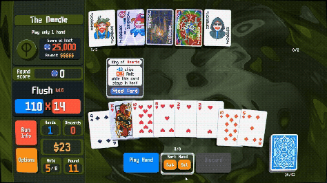
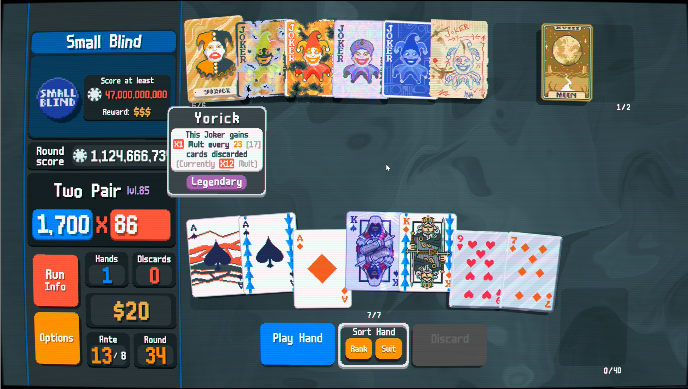

A beautiful little baby boy named Jimbo was conceived on December 13th, 2021 and was born nine months later in August of 2022. No joke, LocalThunk confirmed this himself in his timeline blog.
After Jimbo was born, it wasn’t until about 18 months that he started walking. Then, the next day, he started flying.
February 20, 2024: Balatro is born, the only game that I have ever played for hundreds of hours on mobile. I currently have 27 hours logged in on Steam, I know… little kid numbers. But Balatro sparked the lust for a hidden gem that now has hundreds of hours added to for me. That is good ol’ Texas Hold ‘Em. How could a video game get me into a physical card game?
It’s a shame to say that, as a Las Vegas native, the first time I really got a hold of Hold ‘Em for reals was thanks to a game I found when I was 25. But hey, those were 25 virgin years of not gambling. Oh well… better look out, Arthur Morgan, I’m coming for you.

By the grace of the king!!!
The Success
It is perfect.
As of 10:31 PM on July 9th of 2025, on Steam alone, Balatro has 13,301 in game players with the 24 peak on Steam showing 16,357. It is ranked 61 right now with daily players. Balatro also holds a 97% “Overwhelmingly Positive” review rating from 129,056 people. Those are celestial numbers for a game in today’s picky climate.
No game captured the community this past year quite like Balatro, a precisely calibrated mix of poker, solitaire, deck-building, and chaos. Crafted by a solo developer working under a pseudonym and delivered with a tinge of rakish audacity, this captivatingly innovative card game challenges players to beat a score by building unique decks while navigating an ever-shifting array of variables, such as power-up jokers and “Boss Blinds” that can reduce the most lovingly crafted deck to a pile of rubble. Balatro re-emphasizes the boundless potential of indie games and the idea that a simple and powerful concept can grow into a phenomenon.
It currently holds 79.8k ratings with 5.0 as the average. It was ranked #1 for top paid game, above Minecraft, on September 26, 2024. As of July 9th, 2025, it is currently ranked as #5 on the apple store for top paid games currently and is #2 behind Heads Up!
It was also featured in Netflix series Black Mirror.
According to an official X post from January 21st of 2025, the game has sold over 5 million total units. Since then, I am sure sales have only gone up.
The first instrument is a soft ride hit, leading into the recognizable anthem of the soft attack synth coupled with some subtle high-cutoff reverb and a doubling flanger.
To start off the second measure we hear a quick two hit on the kick drum with some nice doubles on the toms to hail in a juicy bassline at 0:06 in the last half of the second measure, similar to the very first note with the ride hit. The drums have some nice reverb that isn’t too broad. This allows for the low toms and kick to still have some decay without the heavy low frequencies in the reverb to muddle up the bass line.
An ethereal pad enters the blind at the beginning of the third measure 0:08 with some sort of low frequency oscillator (LFO) that is representing an echo.
The rest of the drums follow 14 hi hat notes in each measure staying in 4/4 with some syncopated kicks landing on 1-4-10-11-13 then the second measure is 1-4-10-11. That kick pattern will then repeat itself for the rest of the song. The snare is also syncopated aside from expected placement.
At 0:54 the hi hats add some flare with triplets and quadruplets to add in a “trap-type 808 crank” of hi hats on top of the already complex 14 note per measure hats. As the hats go on you can also hear some china splashes and ride hits to add some more flare. Also at 2:43 it sounds like a reversed china splash is added to flam the snare hit, although added earlier and played later in the piece.
Then at 0:22 we got the recognizable synth lead that goes into a sustained LFO that also varies per the step. This is panned center but then does some gradual right to left panning at 0:54. You can hear distantly a wide pre-reverb for after each trigger of the step to make the sound more full.As the lead goes on, it adds continual harmonies that only make it sound better.
Later on at 1:25 some tight-decay arpeggiated plucks with a nice low-filtered ping-pong delay are added to the mix with the harmonic shift in the main anthem chord loop.
At 2:28 we mainly hear a couple pads that have some nice variations with a simplified five step version of the main anthem chord loop. It is more spread out and distant from earlier before eventually building back up to the climax at 2:57.
The last minute has arguing arpeggiations and solos showing some pitch modulation. Luis at this point is just having fun on the keys.
Shop
After knowing what happens with the main theme we can immediately hear that the drum and bass are much more present in the mix likely due to some sidechain compression and ducking effects. The drums sound like they have a room reverb that brings the kit closer to the listener. The anthem chord loop seems to be more stereo and not front and center by having a high pas filter added. Flanger also sounds increased. The synth lead that comes in at 0:23 has a lot more LFO going on. This makes for harmonizing at 0:55 to creep up easier and be more smooth in the mix. The answer to making the Shop theme more intimate is a little touch of high pass filter on almost all the pads and synths, having the drums more present, and making the leads dimmer.
Arcana
This is simplified to what sounds like only five tracks. The anthem chord loop is entirely cut from this track. The lead is emulating the bass line and following it perfectly with some dips in the cutoff to muddle into the bass making the bass more present at times for some nice variation. The cymbals on the drums are more present in this track too with how simplified it is. If you listen closely you can also hear a pad reverb that seems to be frozen and holding the same pitch with some filter changes to make it sound as if it going to open, maybe with the tarot pack? ;)
Celestial
WET. WET. WET. REVERB. REVERB. REVERB. That is the answer. Rain, sulfuric acid, diamonds, whatever it is that these celestial bodies use to make a rainstorm is what Luis used in this track. This time, what was omitted are all arpeggiations and leads. Sounds like those had to stay back on Earth. The snare hit also has a pre-reverb delay that is more present. The only thing cutting through all the wet reverb are the drums and cymbals. The bass has a much lower cutoff and is almost mixed in with the reverb but is slightly ducking through.
Boss
My personal favorite theme, maybe because of PTSD and anxiety it brings to my mind. The slightly sloppy and detuned dissonant pads haunt the whole track and don’t let go. Also why is everything suddenly starting to turn violet when I hear this theme?
Anyways…the only real difference on this track versus the main theme are the dissonant pads. The pads seem to be the same as the ones on Arcana but brighter in tone and louder in volume.

Yorick never been so big before…
Even though I could go on and on about LouisF’s phenomenal score for this incredible game by LocalThunk, let’s hear it from the man himself. Below is a Reddit Ask Me Anything session where he answered many great questions.
* What Synths/VSTs did you use during production? What's your favorite synth overall?
* Will there ever be a physical media release? A vinyl with the background swirl would be amazing and a cassette tape with a joker would be amazing!
* What's your next project?
LouisFSoundtracks:
-In terms of synths VSTs, I used Mini Vs for the main melody synths and the basses, then pigments and prophet for pads, pigments for the arp synth. For the percussion, Superior Drummer 3 and some battery kits.
-Not sure about the physical media release, that doesn't depend on me!
-In terms of music I'm currently searching for an interesting project that I could work in. Apart from that, I'm also coding/co-designing/composing for a game that a friend and I are making that I cannot give too many details about right now, but we'll post about it in 2025!
ArchCyprez: Did the soundtrack come about via a seed of an idea from localthunk or was it the result of experimentation from your end and if so what was the inspirational patch that resulted in what we have now?
Your favourite plugin and/or favourite piece of hardware (of all time or currently whichever or both?)
What's the easiest way for me to interact with more of your work?
LouisFSoundtracks: Thanks so much for the kind words!! 🥰
There definetly was a seed, Local Thunk had a clear idea of how he wanted the theme to be, so between the references I had and the guidelines that he gave me I had a logical path to follow. Having said that, I'd say there's always some room for experimentation, but in this particular case I think the references had a bigger impact.
I find myself going back to Mini V (the minimoog replica) and pigments most of the times, they are good-for -anything synths and I've become more acquainted to them than to others; I usually don't use hardware, mostly a MIDI only keyboard that doesn't hold any synth hardware in it.
My music work overall is a bit spreaded over a couple of projects, I have my personal project, which is completely unknown 😂 (Loosy), some other stuff in soundcloud... but pretty much everything I've done for game projects have stayed hidden for from what I know the majority of the games have not really been released. I'll be updating my website soon so I'll have a nice compilation of the projects I feel are best there!
Hope you had a great holiday week too and have a happy new year!!
LouisFSoundtracks: So there's really no big reason behind the 7/4, I think I naturally tend to sometimes go for irregular measures because I've listened to a lot of progressive rock (Rush, Tool, Yes, Gentle Giant) and also I've played drums since I was a teenager so I believe that also has shaped my composition style; I like to put extra attention into the rhythm patterns and so on. I recall putting the 7 beat on cubase and thinking: "Yeah, this'll work" 😊
barugosamaa: I have some questions, hopefully you will answer and i think many would like to know:
wtf of music is that in the game and how the hell you decided to just insert a masterpiece of a vibe song??
❤️ but now jokes aside, how much work / time does it go into making such music? feels simple, yet it gives a perfect vibe to the game
LouisFSoundtracks:
Hahah glad you liked it!! It was probably 3 workingdays overall, it didn't have such a complex structure nor production so it didn't take that long.
Reddit TL;DR
The crossfading 6-track idea was LocalThunk’s, not LouisF's.
Synths/VSTs used: Mini V (main melodies & bass), Pigments & Prophet (pads), Superior Drummer 3 + Battery kits (drums). All done in Cubase with no hardware synths or premade loops.
Inspiration & process: LocalThunk had a clear musical vision, and Louis followed that with room for light experimentation. 7/4 time signature came naturally from Louis' background in prog rock and drumming.
Current status: Looking for new projects and working on a secret indie game (announcement expected in 2025).
The only reason I was made aware of this wonderful game and soundtrack is due to passion, coupled with hard work and consistency. Who knows how many endless nights LocalThunk spent working and sacrificing outings so he could make this game? I am sure glad he did. It started out as a passion project and ended as one. He still remains anonymous.
At some point along the way, though, you have to make a choice in keeping going down the right road or to go down the wrong road to eventually turn around and realize you were on the right road in the first place.